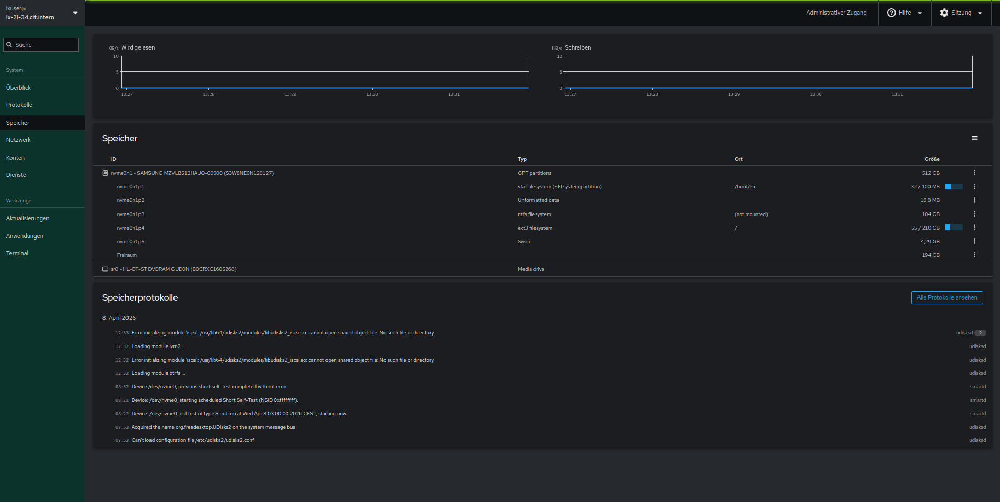

Cockpit Auf OpenSuse
Heute beschäftige ich mich mal mit dem Tool Cockpit, welches zur Serververwaltung mithilfe einer grafischen Oberfläche im Web-Interface lokal genutzt werden kann. Auch wenn hier schon das Wort “Server” erwähnt wird, so eignet sich das Tool Cockpit jedoch ebenfalls hervorragend für private PC’s.
Die Grundfunktionen bleiben dabei gleich der Verwendung auf einem Server. Also alle wichtigen Informationen auf einen Blick darzustellen. Cockpit ist momentan hochaktuell und der De-facto-Standard für die grafische Verwaltung bei Red Hat-basierten Distributionen (RHEL, Fedora, Rocky Linux, AlmaLinux) und wird auch bei Ubuntu/Debian aktiv gepflegt. Um zu wissen, wovon alle reden, installiere ich mir das Paket heute mal auf OpenSuse Leap15.6 und verschaffe mir einen ersten Eindruck
Installation:
Die offizielle Cockpit Dokumentation ist auf meinen System problemlos durchführbar. Bis auf einen kleinen Zusatz am Ende. Hier die nötigen Schritte:
# Installieren
sudo zypper in cockpit
# cockpit Service starten
systemctl enable --now cockpit.socket
# Wenn nötig Firewall öffnen
firewall-cmd --permanent --zone=public --add-service=cockpit
firewall-cmd --reload
# (Optional) Root- Access erlauben
$EDITOR /etc/cockpit/disallowed-users
# sicherheitshalber nochmal dienst neustarten
sudo systemctl restart cockpit.socket
In OpenSuse Leap 15.6 müssen nun noch manuell die fehlenden Benutzergruppen konfiguriert werden. In anderen Distributionen ist dies nicht zwingend nötig.
sudo groupadd -r cockpit-ws
sudo useradd -r -g cockpit-ws -s /sbin/nologin -d /nonexisting -c "User for cockpit web service" cockpit-ws
sudo systemctl restart cockpit.socket
Anwendung
Nun ist die Weboberfläche von cockpit unter localhost mit Port 9090 zu erreichen.
Diese macht einen soliden Eindruck und ist Übersichtlich gestaltet. die Möglichkeit über den Menü-Punkt Aktualisierungen exklusiv die Sicherheitsupdates mit einem Klick zu installieren fällt sofort positiv auf. Weitere Menüpunkte zur Übersicht und Konfiguration sind Protokolle, Speicher, Netzwerk, Konten und Dienste. 
Über Anwendungen ist es möglich vorgeschlagene Add-Ins zu Cockpit hinzufügen. Allerdings ist diese Liste (Zumindest auf meinem Testsystem) doch recht überschaubar, weswegen ich hier mal die offizielle Liste der angebotenen Erweiterungen verlinke.
Fazit
Alles in Allem ist Cockpit eine aktuelles, effizientes, webbasierte Schnittstelle, um seinen Linux-Server, oder eben auch seinen privaten Rechner Übersichtlich zu verwalten. Cockpit ermöglicht dabei eine einfache Systemverwaltung und Überwachung von Linux-Systemen für administrative Aufgaben sowie die Analyse von Systemressourcen und Protokollen ohne tiefe Kommandozeilenkenntnisse. Das Web-Frontend Cockpit ist damit eine Empfehlung für Jeden aktiven Linux Nutzer, oder Server administrator in kleineren Betrieben mit wenigen Servern. Noch kann man auf OpenSUSE den alt gedienten YaST nutzen. Da dieser allerdings seit dem release von OpenSUSE Leap 16.0 als deprecated (nicht mehr unterstützt, veraltet) gilt, ist es langsam an der Zeit sich nach Alternativen umzuschauen. Mit Cockpit kann man immerhin die meisten, wenn nicht sogar alle der Funktionalitäten von YaST abdecken.
Wer Tips und Tricks hat, schreibt es gerne in die Kommentare!
Vielen Dank fürs Lesen
Euer Keeks